{{status.title}}
{{ 'Task.urgent' | translate}}
{{item.title}}
{{item.endDate | seventaskDatePipe:'YYYY/M/D' | async}}
{{item.priorityTitle}}
{{item.priorityTitle}}
{{item.priorityTitle}}
{{user.nickName.charAt(0)}}

{{item.usersAssignedTo[0].nickName.charAt(0)}}

{{item.usersAssignedTo[1].nickName.charAt(0)}}

+{{item.usersAssignedTo.length - 2}}
{{ 'Task.removeUrgent' |
translate}}
{{ 'Task.archive' | translate}}
{{ 'Task.addNewStatusMessage' | translate}}

{{ 'Task.noTaskFound' | translate}}
{{ 'Task.urgent' | translate}}
{{item.title}}
{{item.statusTitle}}
{{item.priorityTitle}}
{{item.priorityTitle}}
{{item.priorityTitle}}
{{user.nickName.charAt(0)}}

{{item.usersAssignedTo[0].nickName.charAt(0)}}

{{item.usersAssignedTo[1].nickName.charAt(0)}}

+{{item.usersAssignedTo.length - 2}}
{{item.endDate | seventaskDatePipe: 'YYYY/M/D' | async}}
{{'Task.deleteTask'
|
translate}}
{{ 'Task.removeUrgent' | translate}}
{{day.momentDate.toDate()| date:'d'}}
{{day.momentDate.toDate()
|getJalaliDate:'D'}}
{{ dayAbbrs[dayIndex] }}
{{ currentMonthName }}
{{ rangeTask.task.title }}
{{ rangeTask.task.title }}
{{ 'Task.noTaskFound' | translate}}
{{'Task.status'| translate}}
{{'Task.title'| translate}}
{{'Task.property'| translate}}
{{'Task.members'| translate}}
{{'Task.timeAndRepeat'| translate}}
{{'Task.priority'| translate}}
{{'Task.timeTracking'| translate}}
{{item.statusTitle}}
{{item.title}}
{{item.title}}
{{user.nickName.charAt(0)}}

{{item.usersAssignedTo[0].nickName.charAt(0)}}

{{item.usersAssignedTo[1].nickName.charAt(0)}}

+{{item.usersAssignedTo.length - 2}}
{{'Task.add' | translate}}
{{'Task.join' | translate}}
{{'Task.createdBy' | translate}}
{{item.createdBy.nickName}}
{{member.nickName.charAt(0)}}
 {{member.nickName}}
{{member.nickName}}
{{'Task.addMember' | translate}}
{{item.priorityTitle}}
{{item.priorityTitle}}
{{item.priorityTitle}}
{{'Task.low' | translate}}

{{'Task.medium' | translate}}
{{'Task.high' | translate}}
{{ 'Task.removeUrgent' | translate}}
{{ 'Task.deleteTask' | translate}}